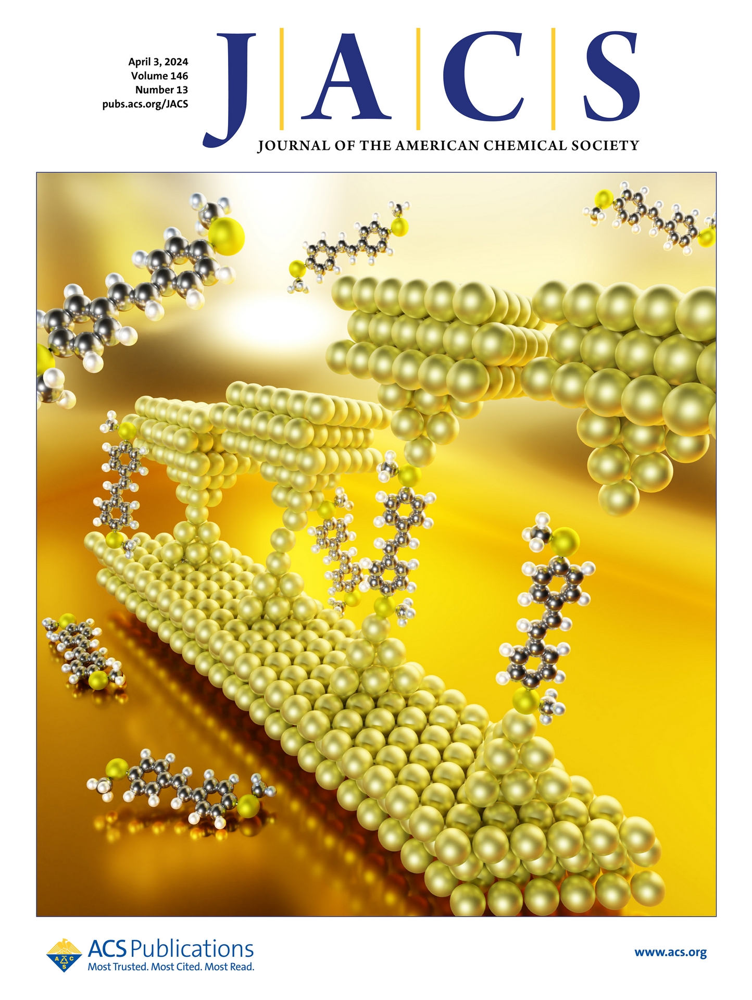
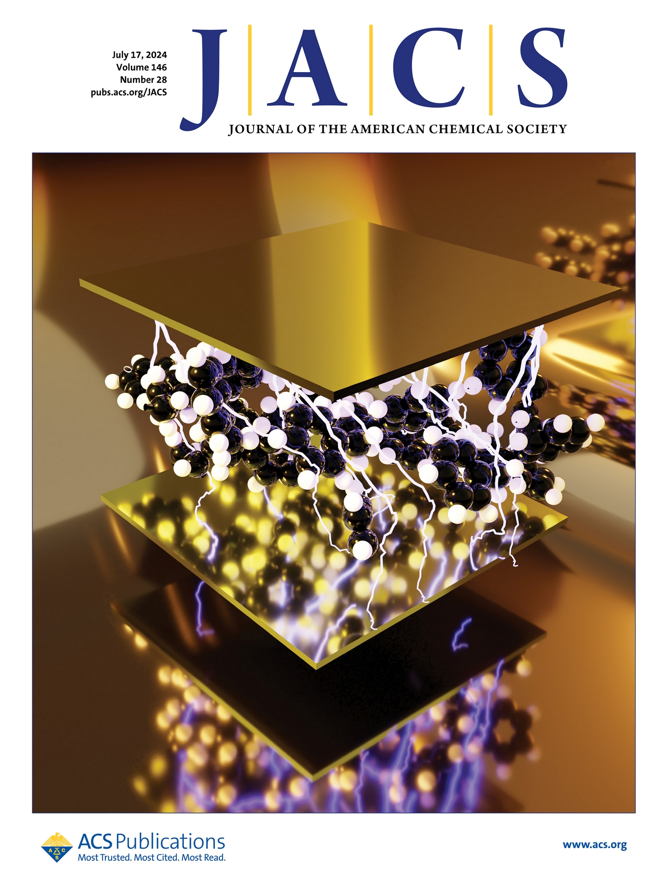
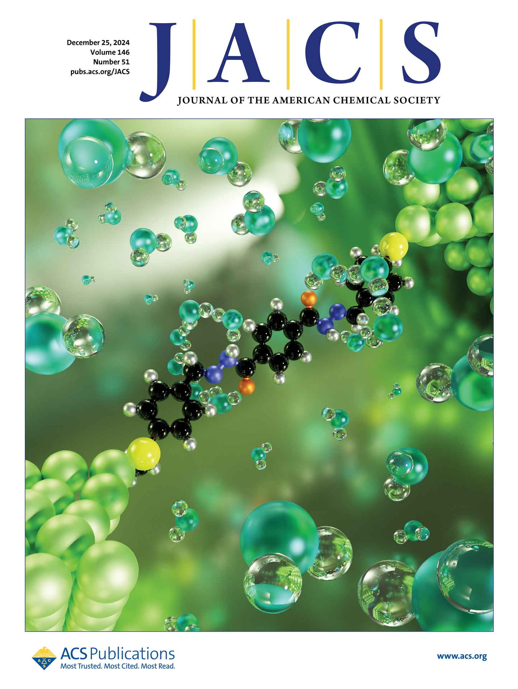

01 — About
0
Citations
0
h-index
0
i10-index
0
Publications
Synced from Google Scholar
I build instruments that listen to single molecules — wiring them between atomically sharp electrodes to see how charge, heat and light move through matter at the sub-nanometre scale.
Synced from Google Scholar
A break-junction experiment pulls two gold electrodes apart while measuring conductance. The gold neck thins to a single atom (1 G0), snaps — and if a molecule bridges the gap, you see a plateau far below.
Any single trace is noise and luck. Thousands of them, stacked into a histogram, reveal the molecule’s fingerprint. This is a toy simulation of exactly that.
Front covers for work on flicker noise at the Au–thiol interface, conducting “non-conducting” polymers, and field-driven tautomerism.



Collaborations, questions about the instruments, or just saying hello. I reply fast — unless I’m on holiday, or deep in the lab coaxing a molecule into a junction at four kelvin.
umarorarman@gmail.comPhysics Institute (PHI)
IQMT · Karlsruhe Institute of Technology
Karlsruhe, Germany